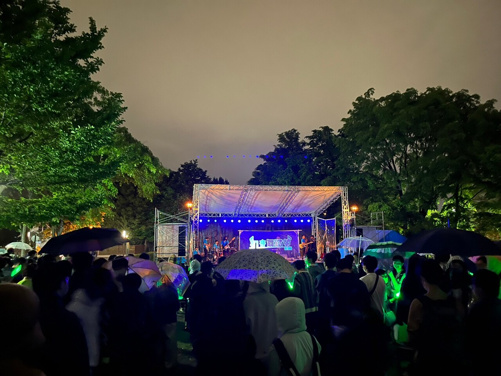

新歓日程確定！
今年度の新歓の日程が確定しました！興味のある方は是非一度日程の合う日にちおこし下さい！詳細についてはSNS等で後日またお知らせします！
【新歓日程】
- 4月3日(水) 18:30~22:00 エルプラザ 音楽スタジオ2
- 4月8日(月) 18:30~22:00 エルプラザ 音楽スタジオ2
- 4月18日(木) 18:15~22:00 高等教育推進機構E201
- 4月24日(水) 18:15~22:00 高等教育推進機構E201
【新歓ライブ】
- 4月28日(日) 18:10~22:00 ZIPPY HALL
祝🌸合格！
本日北大の後期入試の合格発表がありました。合格された方おめでとうございます！当サークルでは現在新歓へ向けた準備が着々と進んでおります。詳細が決まり次第公式SNSなどでお知らせ致しますので是非フォローしてお待ちください！
北大ボカロ同好会公式X
北大ボカロ同好会公式インスタグラム
祝🌸合格！
本日北大の前期入試の合格発表がありました。合格された方おめでとうございます！当サークルでは現在新歓へ向けた準備が着々と進んでおります。詳細が決まり次第公式SNSなどでお知らせ致しますので是非フォローしてお待ちください！
北大ボカロ同好会公式X
北大ボカロ同好会公式インスタグラム
謹賀新年
新年明けましておめでとうございます！本年も当サークルは様々な活動を行っていきますのでどうぞよろしくお願い致します！
冬ライブ開催！
11月23日に冬ライブを行いました！80人以上の方にご来場頂き、大盛況となりました!当サークルでは今後も定期的にライブを行っていきますので、お時間が合えば是非一度見に来てみてください！！告知ポスト
金葉祭参加！
10月28日に行われた金葉祭のステージイベントに当サークル演奏班のバンドが参加しました！セットリスト(Xポスト)
先日のマジカルミライで演奏したばかりの『HERO』も披露しました！綺麗な紅葉の下で演奏する会員はかなり絵になりますね…
初音舞踏祭開催！
先日6月2-4日にかけて行われた北大祭にて、当サークルでは2日の夜にライブステージ、3日と4日には工学部棟にて企画展やDJライブを行いました！
特にライブステージは大雨の中にも関わらず大盛況を見せました！各班の努力を結集したステージ、楽しんで頂けて何よりです！ご来場頂いた方々ありがとうございました！感想は「#初音舞踏祭」を付けてSNS等に描き込んで頂けると、会員のこれからの励みになります！
- 
▲金曜夜のライブステージの様子
▲DJライブの様子
新歓開催中！
先日の6日と本日(10日)に新歓を開催致しました！沢山の新入生の皆さんの参加・入会ありがとうございました！次回の新歓は新歓は18日に行います！！是非ご参加下さい！
新歓のお知らせ！
本サークルは次の日程・場所で新歓を行います！参加に連絡は要らないので興味のある方はどしどしご参加下さい！！詳細は以下のリンクから！
【新歓日程】
- 4月6日(木)18:00~22:00
- 4月10日(月)18:00~22:00
- 4月18日(火)18:00~22:00
サイトページ更新！
活動内容ページの演奏班紹介の部分を更新しました！
サイト公開！
数々の苦難を乗り越え、本サイトがGoogle検索に表示されるようになりました！管理者は大歓喜です。先走り過ぎて内容とかが作りかけなのはご了承下さい！これからアップデートしていきます。
サイトページ追加！
新たに活動内容ページとイベントページを追加しました！
新サイト開設！
長らく放置されていた旧北大ボカロ同好会webサイト。見かねた部員の1人が8割趣味で1から作り直しました！初めて作ったので諸々拙い部分もあると思いますが、温かい目でご覧下さい！見づらい、使いづらい、こんなコンテンツが欲しい等要望ありましたら、お問い合わせページよりお願いします。